VMware虚拟机的三种网络模式
本文最后更新于：2021年9月9日 早上
VMware虚拟机有三种网络模式，分别是Bridged(桥接模式)、NAT(网络地址转换模式)、Host-only(主机模式)。
VMware workstation安装好之后会多出两个网络连接，分别是VMware Network Adapter VMnet1和VMware Network Adapter VMnet8，在工具栏点击编辑-虚拟网络编辑器中可以查看虚拟机的网络配置。
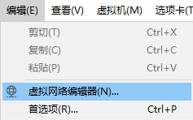
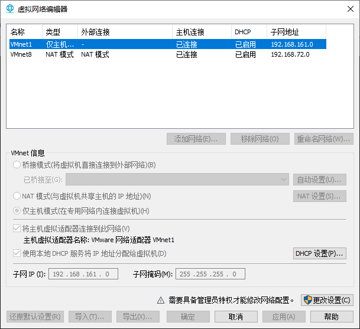
还有一个是VMnet0，可以在virtual network editor中看到，点击以管理员权限更改设置，切换桥接模式才会显示VMnet0。这三个虚拟网络都是VMware安装好之后自动生成的，不需要手动修改。其中VMnet0用于Bridged模式，VMnet1用于Host-only模式，Vmnet8用于NAT模式。VMnet8和VMnet1提供DHCP服务，VMnet0默认则不提供。
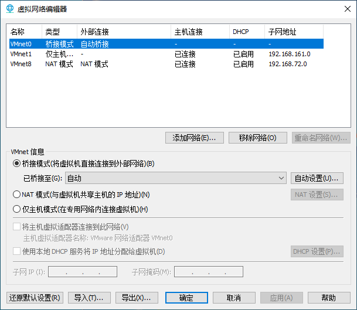
1、Bridged（桥接模式）
在这种模式下，VMWare虚拟出来的操作系统就像是局域网中的一台独立的主机，它可以访问网内任何一台机器，你需要手工为虚拟系统配置IP地址、子网掩码，而且还要和宿主机器处于同一网段，这样虚拟系统才能和宿主机器进行通信，虚拟系统和宿主机器的关系，就像连接在同一个Hub上的两台电脑。从网络技术上理解相当于在宿主机前端加设了一个虚拟交换机，然后宿主机和所有虚拟机共享这个交换机。
如果你想利用VMWare在局域网内新建一个虚拟服务器，为局域网用户提供网络服务，就应该选择桥接模式。
1.1、桥接模式的设置
设置环境：虚拟软件VMware workstation 16 pro，虚拟机系统windows 7旗舰版，主机系统windows 10。
- 检查本地网络连接中属性的
VMware Bridge Protocol（VMware桥接协议）选项是否勾选，默认安装好虚拟机后自动勾选。
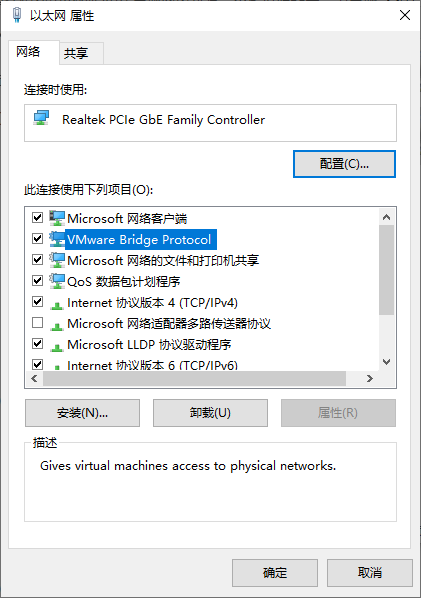
- 将虚拟机网络适配器设置为
VMnet0特定的虚拟网络，在虚拟网络编辑器中VMnet信息选择为桥接模式，并选中本地要桥接的网卡。
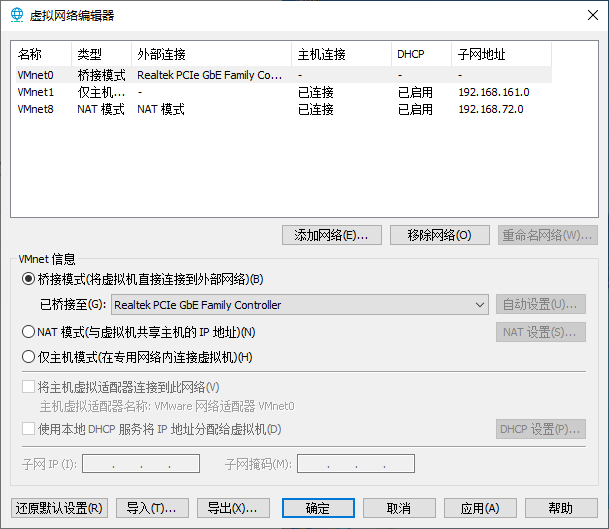
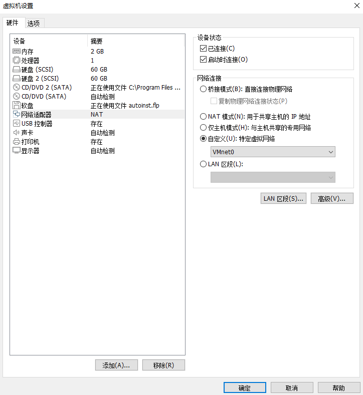
- 主机系统中打开
cmd命令输入ipconfig查看本地网卡IP。
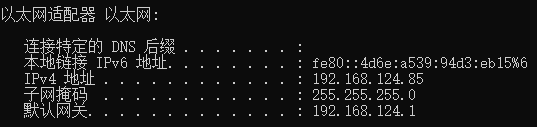
- 在虚拟机系统中将
IP地址修改为和主机同一网段，默认网关和主机一致，这里设置为192.168.124.86。
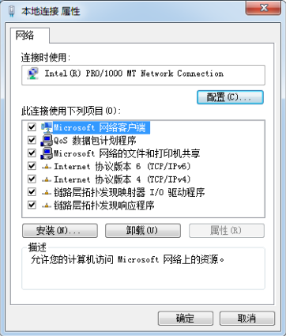
- 在主机中
ping虚拟机的IP，可以访问，同理从虚拟机ping主机IP也能连通。
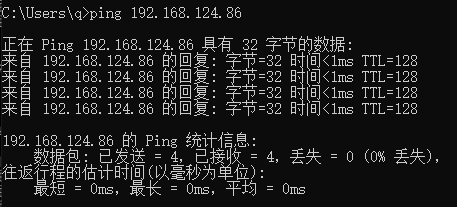
如果配置好DNS的话，虚拟机也可以访问外网。
2、NAT（网络地址转换模式）
使用NAT模式，就是让虚拟系统借助NAT的功能，通过宿主机所在的网络来访问公网。在这种模式下宿主机成为双网卡主机，同时参与现有的宿主局域网和新建的虚拟局域网，但由于加设了一个虚拟的NAT服务器，使得虚拟局域网内的虚拟机在对外访问时，使用的则是宿主机的IP地址，这样从外部网络来看，只能看到宿主机，完全看不到新建的虚拟局域网。
采用NAT模式最大的优势是虚拟系统接入互联网非常简单，你不需要进行任何其他的配置，只需要宿主机器能访问互联网即可。
2.1、NAT模式的设置
- 检查主机的
VWware DHCP Service和VMwareNAT Service两个服务是否启动，安装后默认是启动的。
右键点击计算机-管理-服务和应用程序。
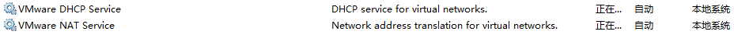
NAT模式用到的就是VMnet8网卡，在虚拟机中网络适配器设置为特定虚拟网络VMnet8模式。
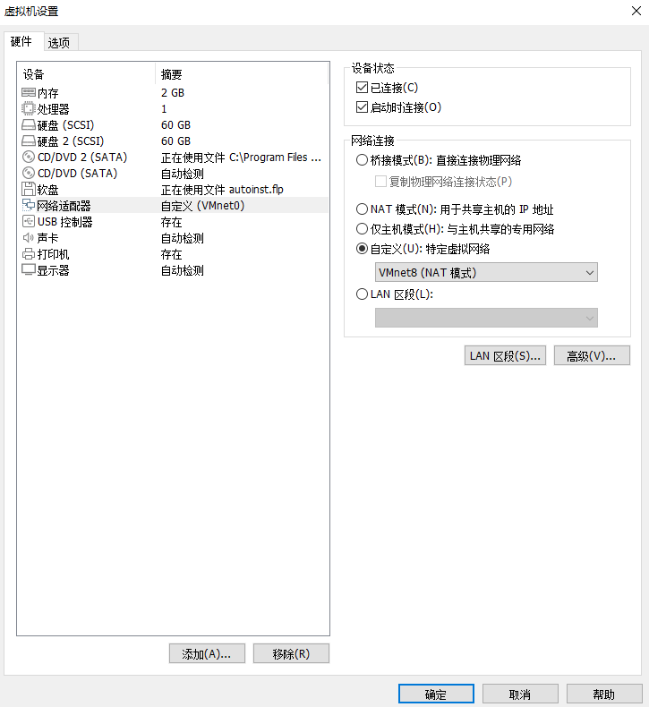
在虚拟网络编辑器设置如下：
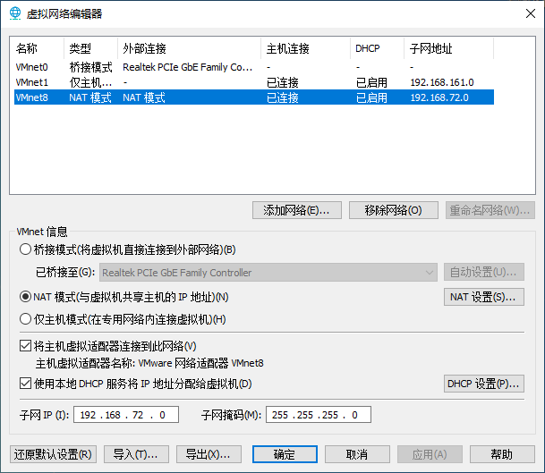
- 将虚拟机的网卡设置为自动获得
IP地址
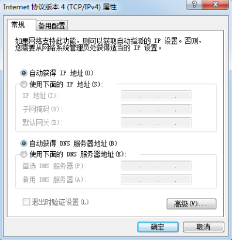
这样虚拟机也能和主机一样正常的访问外部网络了。
3、Host-only(主机模式)
在某些特殊的网络调试环境中，要求将真实环境和虚拟环境隔离开，这时你就可采用host-only模式，在这种模式下宿主机上的所有虚拟机是可以相互通信的，但虚拟机和真实的网络是被隔离开的。
在这种模式下新建了一个由所有虚拟机与宿主机所构成的局域网，但该局域网与宿主机本身所处的现有局域网是相互独立的，如果不做额外路由设置，这两个局域网之间不会连通，因此新建的局域网可以认为是一个单独从属于当前宿主机的私有网络，其成员为当前宿主机和相关的所有虚拟机。
在Host-Only模式下，虚拟网络是一个全封闭的网络，它唯一能够访问的就是主机。其实Host-Only网络和NAT网络很相似，不同的地方就是 Host-Only网络没有NAT服务，所以虚拟网络不能连接到Internet。主机和虚拟机之间的通信是通过VMware Network Adepter VMnet1虚拟网卡来实现的。此时如果想要虚拟机上外网则需要主机联网并且网络共享。
3.1、Host-only模式下的网络设置
- 虚拟机设置-网络适配器设置为
VMnet1(仅主机模式)
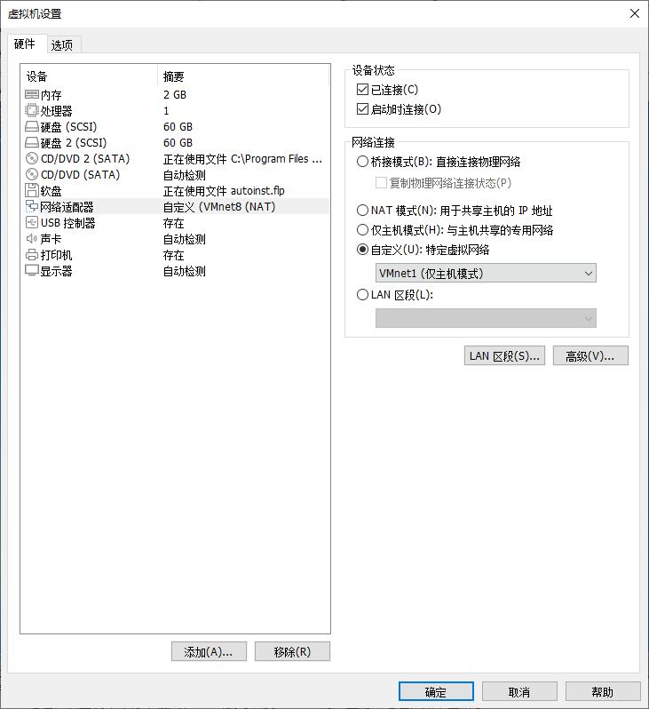
- 虚拟机网络编辑器中，设置使用本地
DHCP的子网IP地址。
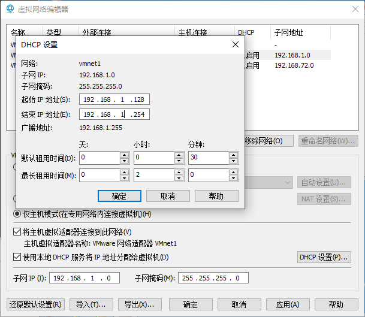
本博客所有文章除特别声明外，均采用 CC BY-SA 4.0 协议 ，转载请注明出处！